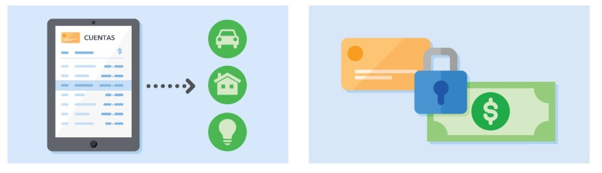

Nuestro compromiso con la privacidad del usuario
Una de nuestras máximas prioridades es proteger la información de los usuarios. Durante años, hemos colaborado estrechamente con las autoridades de protección de datos de todo el mundo y hemos implementado importantes medidas para proteger la privacidad de acuerdo con sus directrices.
Proporcionamos transparencia sobre cómo se utilizan los datos en nuestros productos de publicidad. Pedimos permiso a los usuarios para poder usar sus datos con el fin de mostrarles anuncios personalizados y explicamos con transparencia cómo los usamos en tiempo real a través de la página "¿Por qué este anuncio?". Además, en safety.google.com y en nuestra Política de Privacidad explicamos con absoluta claridad cómo utilizamos los datos. También proporcionamos transparencia a los usuarios sobre qué datos guardamos en su cuenta de Google, donde los usuarios pueden ver y gestionar sus ajustes relativos a los datos y sus configuraciones de privacidad y seguridad. Los usuarios pueden acceder a la configuración de los anuncios y gestionar allí el uso de los datos para personalizar los anuncios que ofrecemos, incluso en nuestros productos. Como parte de nuestro compromiso continuo por ofrecer controles para que los usuarios puedan gestionar su privacidad, hemos actualizado nuestra experiencia de creación de cuentas de seguros para brindar más opciones a los usuarios sobre qué datos quieren guardar en ellas.
Le informaremos al momento de los incidentes relacionados con los datos de sus clientes según las condiciones estipuladas en los acuerdos que tengamos con usted. Contamos con tecnologías avanzadas para detectar y evitar amenazas, e invertimos continuamente en ellas. Además, disponemos de un riguroso programa para gestionar incidentes de forma ininterrumpida que permite identificar y responder inmediatamente a eventos de seguridad o privacidad, y que ofrece toda la información disponible.
